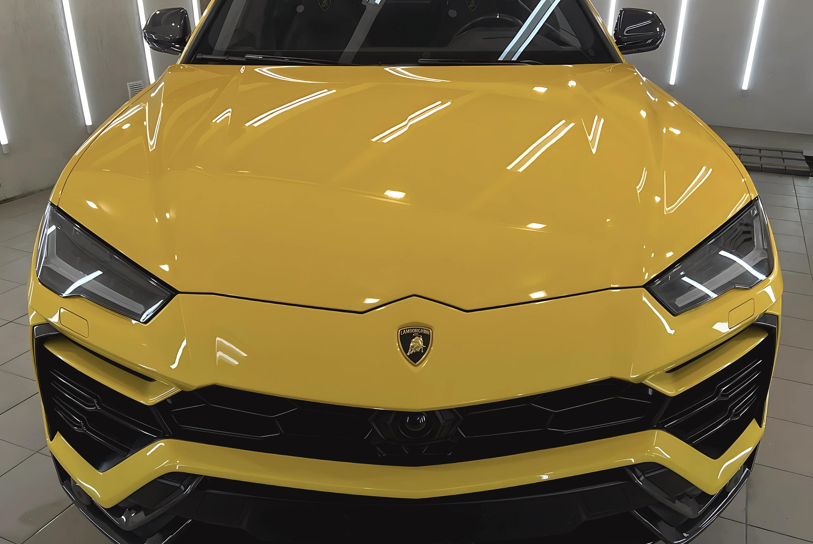
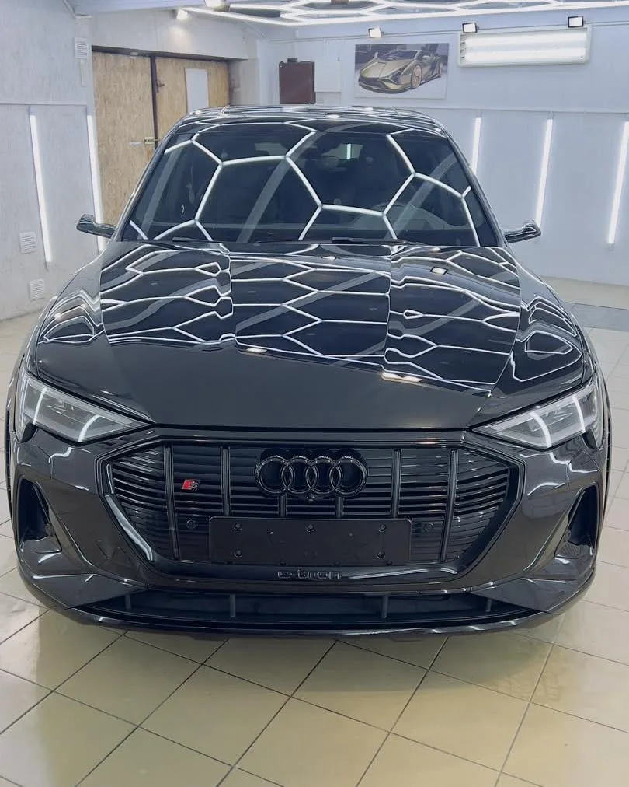
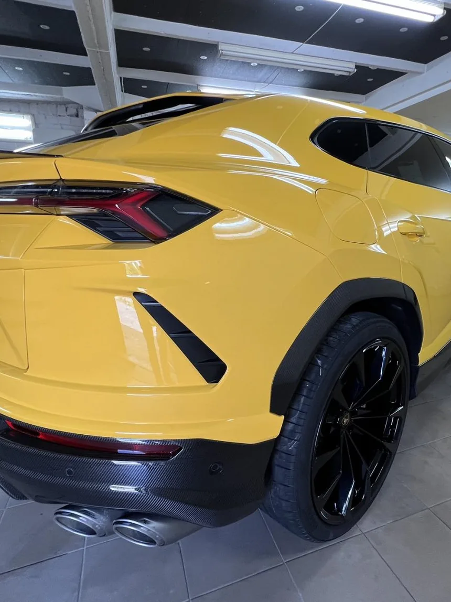

Įlenkimų šalinimasbe dažymo Kaune
Meninis lyginimas, kėbulo poliravimas ir keraminė nanodanga.
Kodėl be dažymo
| Kriterijus | Meninis lyginimas | Dažymas |
|---|---|---|
| Gamyklinis lakas | išsaugomas | nušlifuojamas |
| Glaistas | nenaudojamas | naudojamas |
| Dažų storio matuoklis | rodo originalą | rodo perdažymą |
| Spalva | lieka gamyklinė | derinama |
| Automobilio istorija | be perdažymo | su perdažymu |
Ne kiekvieną pažeidimą galima ištaisyti PDR metodu, nes lakas turi būti sveikas. Ar jūsų atveju įmanoma, pasakysime iš nuotraukos arba apžiūrėję vietoje.
Įvertinti pagal nuotrauką04
Ką darome
Pirmiausia ištaisome kėbulo formą, tada nupoliruojame paviršių ir tik tada dengiame apsauginę dangą.
- Taip pat atliekame
- Krušos pažeidimų šalinimas · žibintų poliravimas · salono poliravimas · gilioji dekontaminacija (dervos, metalo dulkės) · įdaužų maskavimas dažais pagal gamyklinį spalvos kodą · ardymo ir surinkimo darbai
- Įkainis
- nuo 40 €/val. Galutinė suma priklauso nuo pažeidimų kiekio ir kėbulo būklės.
-
Meninis lyginimas
Įlenkimus išspaudžiame iš vidinės pusės arba ištraukiame iš išorės, kai prieigos į vidų nėra. Tvarkome duris, sparnus, statramsčius, krušos pažeidimus.
-

Kėbulo poliravimas
Pakopomis nupoliruojame sūkurius, plovyklos žymes ir smulkius įbrėžimus. Nupoliruotas paviršius kartu yra paruošiamas dangai.
-

Apsauginė danga
Keraminę arba grafeno dangą dengiame ant jau sutvarkyto paviršiaus. Kėbulas tampa lengviau plaunamas, o blizgesys laikosi ilgiau nei po vaško.
05
Studija
Studija V. Krėvės pr. 129A, Kaune. Visus darbus atlieka pats Mindaugas.
-
„Nupoliravo nubrozdintas vietas gražiai, kruopščiai ištiesino mažus įlenkimus ant kėbulo.“
-
„Puikus savo srities specialistas, puikiai išmanantis savo darbą. Kokybiškai atlieka meninį kėbulo lyginimą be dažymo ir profesionaliai atstato kėbulą į gamyklinę būklę. Visada pateikia naudingų patarimų bei vertingų pastebėjimų, į ką reikėtų atkreipti dėmesį. Atsakingas, kruopštus ir orientuotas į aukščiausią darbų kokybę.“
07
Darbai
Baigti automobiliai studijos apšvietime.
-
BMW M4 · matinis žalias kėbulas -
BMW i5 · šešiakampis atspindys kapote -
BMW i5 · galas studijos šviesoje
08
Video
-
Audi Q4 e-tron · durys
-
Tesla · durys
-
BMW X3 · sparnas
09
Atsiųskite įlenkimo nuotrauką.
Įvertinsime iš nuotraukos ir atsakysime telefonu arba el. paštu.
- Telefonas+370 633 33969
- El. paštasbfr082@gmail.com
- MessengerRašyti žinutę
- Instagram@_minerda_
- AdresasV. Krėvės pr. 129A, Kaunas
- Darbo laikasI–V 09:00–17:00 · VI–VII nedirba